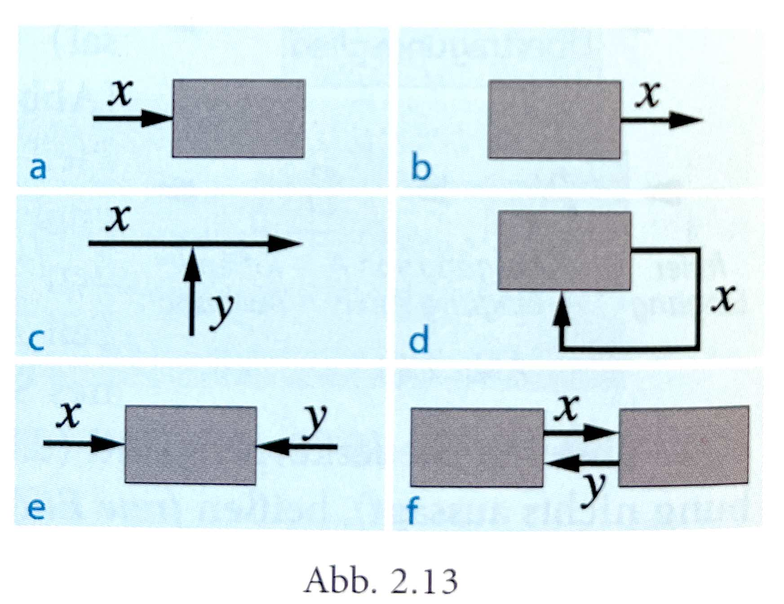
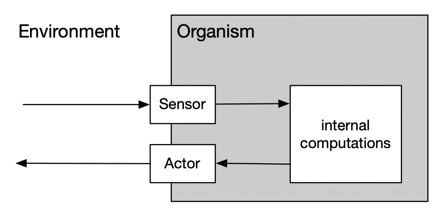
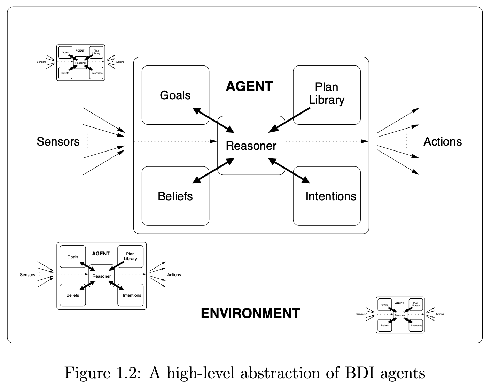

![]()
%%{ init: { 'flowchart': { 'curve': 'natural' } } }%%
graph LR
START[ ] -- x1 --> f[y = 0.5*x1 + 2*x]
START2[ ] -- x2 --> f
f -- y --> STOP[ ]
style START fill-opacity:0, stroke-opacity:0;
style START2 fill-opacity:0, stroke-opacity:0;
style STOP fill-opacity:0, stroke-opacity:0;
Visualizing cybernetic systems
Bischof notation & BDI architecture
Two types of block diagrams
…for cybernetic* models
Mason diagrams (used in DAGs, SEM, VAST) vs. Bischof diagrams:
| Type | Mason/VAST (left panel) | Bischof (right panel) |
|---|---|---|
| Signals/variables displayed as … | Circles/Boxes | Arrows |
| Transfer elements/ computations/ relationships displayed as .. | Arrows | Boxes |
Both are interchangeable; we will use both styles.

Block diagrams for cybernetic models
Properties
- Arrows are causal directions, not temporal links!
- This is not a flow diagram or process model
- Everything “happens at the same time”
- Boxes are functions / computational transformations
- All arrows going into a box are inputs (independent variables)
- The arrow going out of a box (typically only one) is the function value (dependent variable)
Block diagrams for cybernetic models
Properties
- Blocks can be placeholders for encapsulated subsystems (sometimes “black boxes”)
- e.g. the eye as a black box: We might not care how exactly the neuronal pattern in the retina is transformed into the signal “distance from object”
- One general “super-block” in ABMs: The organism (delineated from the environment)
- Arrow may originate in “nowhere” - then these are free inputs. These can be variables or constants (although constants also can be defined within the formula in a box).
Common errors

- (a, b): Blocks without input or output are useless and can be reduced
- (c): We need another block which has \(x\) and \(y\) as input and a new variable as output
- (d): This reduces to \(x = f(x)\) → \(x\) = const.
- (e): A block with only inputs but no outputs is useless
- (f): This implies that \(x\) and \(y\) are constant.
Parameters of the model
Arrows are variables. Parameters are concrete numbers for the computations in the boxes.
Sensors
Perceiving the environment
Organisms have a vast range of sensors for perceiving their environment. These have been adapted to selection pressures:
- Humans don’t have sensors for ultraviolet light (bees do)
- We have no sensors for radioactivity, as this was no relevant selective force
- Single-celled organism have, for example …
- chemoreceptors for sugar
- tactile sense (simple membranes transmitting changes in pressure)
Sensors
Brunswik’s lens model
- Organisms constantly need to form a judgement about latent properties of situations and objects (the criterion)
- Most criteria are not directly observable, but need to be inferred via cues. Example:
- Latent property: The caloric energy of a dessert
- Cues: Size, taste, color
- Cues often are not perfect indicators, but rather statistically correlated with the criterion.
Higher correlation → higher cue validity - Not all cues are used (with the same weight) in judgement formation → cue utilization
Sensors
Brunswik’s lens model

Sensors
Implementing the lens model as a demiurg
Principle:
- Any external information must enter the organism via a sensor
- Arrows going into a sensor must be observable cues
- Arrows going out of sensors are the organism’s representation of the phenomenon in the environment
- The lens model itself (i.e., the weights of cue validity and utilization) is implemented in the sensor box
- No arrow may directly cross a block border

Actors

Sensing the environment only makes sense when organisms are able to react on this information. Devices that allow to manipulate the environment (or the organism’s position within the environment) are called actors.
Example: The Zurich Model of Social Motivation

BDI model:
Belief → Desire → Intention
BDI model: Belief → Desire → Intention
A common model from software architecture is the BDI model:
- Beliefs about the world (including itself and other agents)
- Desires represent the motivational state of the agent - what the agent would like to accomplish.
- Intentions represent the deliberative state of the agent – what the agent has chosen to do.
BDI model: Belief → Desire → Intention
Two examples
{{< fa people-group size=1x >}} Group exercise (15 min.): Convert these plots into a proper Bischof-style diagram. Add variables/boxes where necessary.


One possible BDI implementation in Bischof-style

End
Contact
- @nicebread@scicomm.xyz
- ed.uml.ysp@tdorbneohcs.xilef
- https://www.nicebread.de
- https://github.com/nicebread